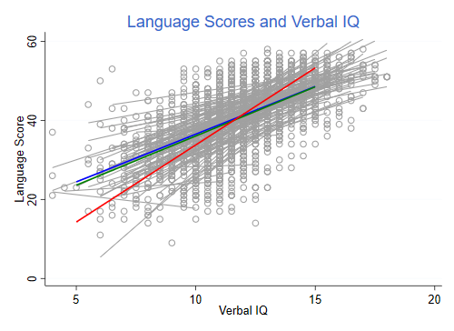

We will illustrate the analysis of clustered or panel data using three examples, two dealing with linear models and one with logits models. The linear model examples use clustered school data on IQ and language ability, and longitudinal state-level data on Aid to Families with Dependent Children (AFDC).
Snijders and Boskers (1999), Multilevel Analysis, have data for 2287 8-th grade children in 131 schools in The Netherlands. The data are available in the datasets section in a Stata file and can be read directly from Stata or R.
. use https://grodri.github.io/datasets/snijders, clear (Scores in language test from Snijders and Bosker, 1999)
We are interested in the relationship between verbal IQ and the score in a language test. OLS gives a highly significant coefficient of 2.65 with a standard error of 0.072:
. reg langpost iq_verb
Source │ SS df MS Number of obs = 2,287
─────────────┼────────────────────────────────── F(1, 2285) = 1352.84
Model │ 68915.7639 1 68915.7639 Prob > F = 0.0000
Residual │ 116401.529 2,285 50.941588 R-squared = 0.3719
─────────────┼────────────────────────────────── Adj R-squared = 0.3716
Total │ 185317.293 2,286 81.0661822 Root MSE = 7.1373
─────────────┬────────────────────────────────────────────────────────────────
langpost │ Coefficient Std. err. t P>|t| [95% conf. interval]
─────────────┼────────────────────────────────────────────────────────────────
iq_verb │ 2.653896 .0721541 36.78 0.000 2.512401 2.79539
_cons │ 9.528484 .8668206 10.99 0.000 7.828646 11.22832
─────────────┴────────────────────────────────────────────────────────────────
We consider the fact that the observations are probably correlated within each school because of unobserved school characteristics that affect language scores (such as a good language teacher).
. xtreg langpost iq_verb, i(schoolnr) mle
Fitting constant-only model:
Iteration 0: log likelihood = -8128.005
Iteration 1: log likelihood = -8126.6359
Iteration 2: log likelihood = -8126.6093
Iteration 3: log likelihood = -8126.6092
Fitting full model:
Iteration 0: log likelihood = -7629.2356
Iteration 1: log likelihood = -7625.8966
Iteration 2: log likelihood = -7625.8865
Iteration 3: log likelihood = -7625.8865
Random-effects ML regression Number of obs = 2,287
Group variable: schoolnr Number of groups = 131
Random effects u_i ~ Gaussian Obs per group:
min = 4
avg = 17.5
max = 35
LR chi2(1) = 1001.45
Log likelihood = -7625.8865 Prob > chi2 = 0.0000
─────────────┬────────────────────────────────────────────────────────────────
langpost │ Coefficient Std. err. z P>|z| [95% conf. interval]
─────────────┼────────────────────────────────────────────────────────────────
iq_verb │ 2.488094 .0705261 35.28 0.000 2.349865 2.626323
_cons │ 11.16511 .8822371 12.66 0.000 9.435956 12.89426
─────────────┼────────────────────────────────────────────────────────────────
/sigma_u │ 3.081719 .2552303 2.619967 3.624851
/sigma_e │ 6.498244 .0991428 6.306804 6.695495
rho │ .1836084 .0255577 .137803 .237875
─────────────┴────────────────────────────────────────────────────────────────
LR test of sigma_u=0: chibar2(01) = 225.92 Prob >= chibar2 = 0.000
. mat re = e(b)
The coefficient of verbal IQ is 2.49 with a standard error of 0.071 and is still highly significant. We have also learned that the language scores are correlated within schools; in fact, 18.3% of the variation in language scores net of verbal IQ can be attributed to the schools (the rest is due to the pupils). The intra-class correlation is highly significant, as shown by a test statistic of 225.9 (conservatively a chi-squared with 1 d.f.)
We now consider a fixed-effects model that allows for the possibility of a correlation between unobserved school characteristics and verbal IQ (the school with the good teacher attracts brighter students):
. xtreg langpost iq_verb, i(schoolnr) fe
Fixed-effects (within) regression Number of obs = 2,287
Group variable: schoolnr Number of groups = 131
R-squared: Obs per group:
Within = 0.3452 min = 4
Between = 0.5985 avg = 17.5
Overall = 0.3719 max = 35
F(1,2155) = 1135.95
corr(u_i, Xb) = 0.1463 Prob > F = 0.0000
─────────────┬────────────────────────────────────────────────────────────────
langpost │ Coefficient Std. err. t P>|t| [95% conf. interval]
─────────────┼────────────────────────────────────────────────────────────────
iq_verb │ 2.414772 .0716466 33.70 0.000 2.274269 2.555276
_cons │ 12.35828 .858667 14.39 0.000 10.67438 14.04219
─────────────┼────────────────────────────────────────────────────────────────
sigma_u │ 3.7161754
sigma_e │ 6.4913354
rho │ .2468383 (fraction of variance due to u_i)
─────────────┴────────────────────────────────────────────────────────────────
F test that all u_i=0: F(130, 2155) = 4.67 Prob > F = 0.0000
. mat fe = e(b)
Our results are very robust, the coefficient of verbal IQ is 2.41 with a standard error of 0.071. We feel pretty confident on our conclusions. Note that we get an F-test for school effects, which are highly significant.
If you are not deterred by the ecological fallacy you could have
analyzed group means. Stata makes this easy with the be
option. We also use wls to weight schools in proportion to
the number of students (not that it makes a huge difference):
. xtreg langpost iq_verb, i(schoolnr) be wls
Between regression (regression on group means) Number of obs = 2,287
Group variable: schoolnr Number of groups = 131
R-squared: Obs per group:
Within = 0.3452 min = 4
Between = 0.5137 avg = 17.5
Overall = 0.3719 max = 35
F(1,129) = 136.29
sd(u_i + avg(e_i.)) = 3.173519 Prob > F = 0.0000
─────────────┬────────────────────────────────────────────────────────────────
langpost │ Coefficient Std. err. t P>|t| [95% conf. interval]
─────────────┼────────────────────────────────────────────────────────────────
iq_verb │ 3.899369 .3340076 11.67 0.000 3.238527 4.560211
_cons │ -5.210525 3.962379 -1.31 0.191 -13.05019 2.62914
─────────────┴────────────────────────────────────────────────────────────────
. mat be = e(b)
This gives a much larger coefficient of 3.90, albeit with a larger standard error of 0.334. Clearly working with aggregate data would overestimate the relationship between verbal IQ and language scores. Note that the random-effects estimate is between the within and between estimates (it always is).
The following figure shows the data, separate regression fits for each of the 131 schools, and the between, within, and random-effects estimates. First we run the school regressions
. statsby a=_b[_cons] b=_b[iq_verb], by(schoolnr) saving(schoolregs, replace) ///
> : regress langpost iq_verb
(running regress on estimation sample)
Command: regress langpost iq_verb
a: _b[_cons]
b: _b[iq_verb]
By: schoolnr
Statsby groups
────┼─── 1 ───┼─── 2 ───┼─── 3 ───┼─── 4 ───┼─── 5
.................................................. 50
.................................................. 100
...............................
. sort schoolnr
. merge m:1 schoolnr using schoolregs
Result Number of obs
─────────────────────────────────────────
Not matched 0
Matched 2,287 (_merge==3)
─────────────────────────────────────────
. drop _merge
. gen yhat = a + b * iq_verb
. sort schoolnr iq_verb
And then we do the combined plot
. local lw lw(medthick) . twoway scatter langpost iq_verb, msymbol(circle_hollow) mcolor(gs10) /// > || line yhat iq_verb, connect(ascending) color(gs10) /// > || function y = fe[1,2] + fe[1,1]*x, range(5 15) lcolor(blue) `lw' /// > || function y = mle[1,2] + mle[1,1]*x, range(5 15) lcolor(green) `lw' /// > || function y = be[1,2] + be[1,1]*x, range(5 15) lcolor(red) `lw' legend(off) /// > title(Language Scores and Verbal IQ) xtitle(Verbal IQ) ytitle(Language Score) . graph export snijders.png, width(500) replace file snijders.png saved as PNG format

The red line is the between-groups estimate, which overstates the relationship between IQ and language scores. The blue line is the within-groups or fixed-effects estimator. The green line is the random-effects estimator, which is always an average of the within and between, and in this case comes very close to the within-group estimator.